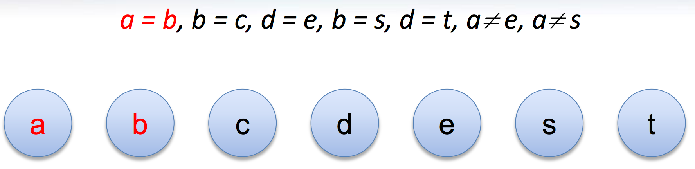
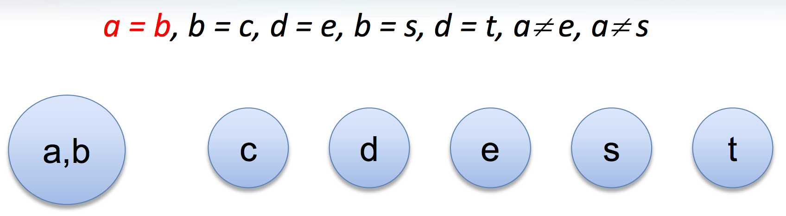
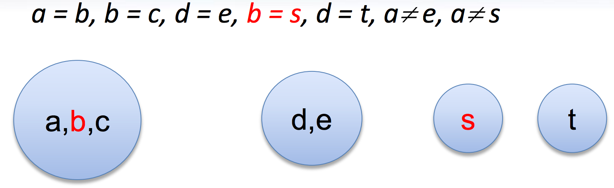
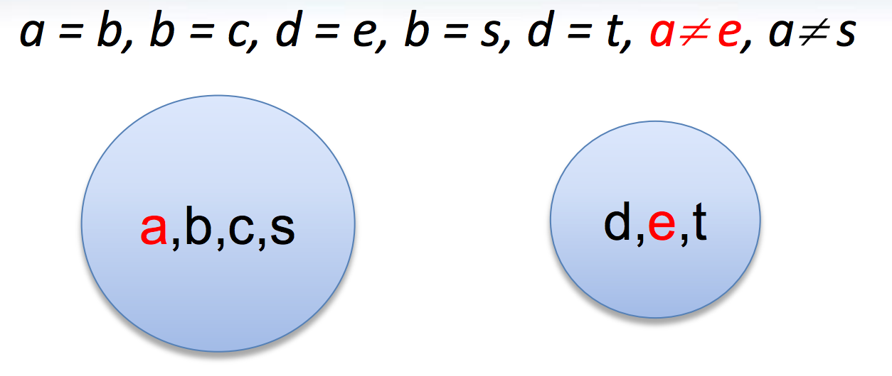

The Lean Theorem Prover
and
Automation
Leonardo de Moura (Microsoft Research)
CPP, 2016/01/19
http://leanprover.github.io/
The Lean Theorem Prover Team
- Soonho Kong (CMU),
- Jeremy Avigad (CMU)
- Floris van Doorn (CMU),
- Rob Lewis (CMU),
- Jakob von Raumer (KIT),
- Daniel Selsam (Stanford)
Many thanks to
- Cody Roux
- Georges Gonthier
- Grant Passmore
- Nikhil Swamy
- Assia Mahboubi
- Bas Spitters
- Steve Awodey
- Ulrik Buchholtz
- Tom Ball
- Parikshit Khanna
- Haitao Zhang
Introduction: Lean
- New open source theorem prover
- Platform for
- Software verification & development
- Formalized mathematics
- Education (mathematics, logic, computer science)
- Synthesis (proofs & programs)
- de Bruijn's Principle: small trusted kernel
- Expressive logic
- Partial constructions: automation fills the "holes"
Introduction: Lean
- Backend for other systems
- Haskell API for Lean developed by Joe Hendrix
- Interactive theory proving course at CMU
- Introduction to Logic course at CMU
- It is an ongoing and long long term effort
Main Goal
Lean aims to bring two worlds together
- An interactive theorem prover with powerful automation
- An automated reasoning tool that
- produces (detailed) proofs,
- has a rich language,
- can be used interactively, and
- is built on a verified mathematical library
Secondary Goals
- Robust proofs
- Minimalist and high-performace kernel
- Education
- Interactive courses
- Proving should be as easy as programming
- Have Fun
Software verification and
Formalized Mathematics
- Some projects at Microsoft Research
- Disclaimer: this projects were developed before Lean existed
- They used Boogie/Z3 and Coq.
Software verification and
Formalized Mathematics
- Similar problems
- Proof stability
- Libraries are big
- Scalability issues
- Finding existing functions/theorems
- Common problems in software engineering:
- Every attempt to create a single unified language failed (ADA?)
- We keep reimplementing the same libraries over and over again
- Mixing libraries from different languages is usually a mess
- Bit rotting
- These problems also affect formalized mathematics
What is new?
- Poweful elaboration engine that can handle
- Higher-order unification
- Definitional reductions
- Coercions
- Ad-hoc polymorphism (aka overloading)
- Type classes
- Tactics
"By relieving the brain of all unnecessary work, a good notation sets it free to concentrate on more advanced problems, and in effect increases the mental power of the race." – A. N. Whitehead
What is new?
- Poweful elaboration engine that can handle
- Small trusted kernel
- It does not contain
- Termination checker
- Fixpoint operators
- Pattern matching
- Module management
- It does not contain
What is new?
- Poweful elaboration engine that can handle
- Small trusted kernel
- Multi-core support
- Process theorems in parallel
- Execute/try tactics (automation) in parallel
What is new?
- Poweful elaboration engine that can handle
- Small trusted kernel
- Multi-core support
- Fast incremental compilation
What is new?
- Poweful elaboration engine that can handle
- Small trusted kernel
- Multi-core support
- Fast incremental compilation
- Support for mixed declarative and tactic proof style
What is new?
- Poweful elaboration engine that can handle
- Small trusted kernel
- Multi-core support
- Fast incremental compilation
- Support for mixed declarative and tactic proof style
- Automation
Dependent Type Theory
- Before we started Lean, we have studied different theorem provers: ACL2, Agda, Automath, Coq, HOL (family), Isabelle, Mizar, PVS
- Dependent type theory is really beautiful
- Some advantages
- Bultin computational interpretation
- Same data-structure for representing proofs and terms
- Reduce code duplication, example:
- We implemented a compiler for Haskell-like recursive equations, we can use it to construct proofs by induction
- Mathematical structures (such as Groups and Rings) are first-class citizens
- Some references
- In praise of dependent types (Mike Shulman)
- Type inference in mathematics (Jeremy Avigad)
Architecture

Architecture

Kernel
- Kernel is implemented in two layers for easy customization
1st layer, dependent lambda calculus + options:
- Proof irrelevance
- Impredicative Prop
Π (x : nat), x = x -- is a Proposition ∀ (x : nat), x = x -- Alternative notation - 2nd layer: Inductive families, Quotient types, HITs

Two official libraries
- Standard
- Proof irrelevant and impredicative Prop
- Smooth transition to classical logic
- Inductive Families
- Quotient Types
- HoTT
- Proof relevant and no impredicative Prop
- Univalence axiom
- Inductive Families
- HIT
- Easy to implement experimental versions, Example: Steve Awodey asked for proof relevant and impredicative universe
Agnostic Mathematics
- Support constructive and classical mathematics
- Computation is important to mathematics
- Core parts of the standard library are constructive
- Separation of concerns:
- Methods to write computer programs
- Freedom to use a nonconstructive theories and methods to reason about them
Noncomputable Keyword
- Our conjecture: most users don't care about constructivism, what they really care about is whether code can be generated our not for a definition.
Freedom to trust
- Option: type check imported modules.
- Macros: semantic attachments for speeding up type checking and evaluation.
- Macros can be eliminated (expanded into pure Lean code).
- Each macro provides a function for computing the type and evaluating an instance.
- Each macro can be assigned a trust level.
- Many applications: interface with the GNU multiprecision arithmetic (GMP) library.
Freedom to trust
- Relaxed mode
- Trust the imported modules have not been tampered
- Trust all macros
- Paranoid mode
- Retype check all imported modules (someone may have changed the binaries)
- Expand all macros (the developers may have made mistakes, GMP may be buggy)
- Stronger guarantee Retype check everything using Lean reference type checker
- Daniel Selsam implemented a reference type checker in Haskell
Exporting libraries
- All Lean files can be exported in a very simple format
- Documentation is available on github
- Communicate with other tools
- Interface with the Lean reference type checker
- Haskell API can be used to import libraries, browse and construct terms, parse files, etc.
- We also have a C API
Recursive equations
- Recursors are inconvenient to use.
- Compiler from recursive equations to recursors.
- Two compilation strategies: structural and well-founded recursion
- Proofs by induction
Recursive equations
- Dependent pattern matching
Human-readable proofs
Tactics
- Automation such as rewrite engined, simplifiers and decision procedures are integrated into the system as tactics.
- A placeholder/hole can be viewed as a goal
- A proof state is a sequence of goals, substitution (already solved holes), and postponed constraints.
- A tactic is a function from proof state to a lazy stream of proof states (very similar to Isabelle).
- Tacticals are tactic combinadors: andthen, orelse, par, …
Structures
- Special kind of inductive datatype (only one constructor)
- Projections are generated automatically
- "Inheritance"
- Extensively used to formalize the algebraic hierarchy
- We can view them as parametric modules
Structures
Structures (additional instances)
Structures (concrete instances)
- Is
intaadd_group? Yes
Sylow theorem
Automation in Lean
- Joint work with Daniel Selsam (Stanford)
- Work in Progress
- Collection of proof procedures
- Congruence closure
- E-matching
- Arithmetic
- Ordered rewriting
- Completion and superposition calculus
- SMT/ATP procedures for dependent type theory.
- Indexing
Automation (main challenges)
- Many different settings
- Constructive vs Classical
- Semi-constructive axioms: propext, quotients/funext
- Proof relevant vs proof irrelevant
- Impredicative Prop
- Dependent types
- Type classes
Congruence closure
- It is in the kernel of most SMT solvers (e.g., CVC4, MathSAT, Yices, Z3)
- Efficient procedure for equality

Congruence closure

Congruence closure

Congruence closure

Congruence closure

Congruence closure

Congruence closure

Congruence closure

Congruence closure

Congruence closure

Congruence closure

Congruence closure

Congruence closure

Congruence closure + Heuristic instantiation
- Heuristic instantiation: adds instances of lemmas to local context.
- Simple and effective (used by many SMT solvers).
- "Context as a black board".
- Indexing.
- Avoids many technical issues.
Congruence closure and dependent functions
- Equality type
- Congruence closure is easy for non-dependent functions.
- Dependent functions
Casts
- Cast operation
Heterogeneous equality
- Heterogeneous to Homogeneous
Congruence for heterogeneous equality
- Next problem: following lemma is not provable without assuming another axiom.
Congruence for heterogeneous equality
- BUT, the following family of lemmas is
Example
- Induction + Congruence closure + Heuristic instantiation is already quite useful.
Congruence closure and proof relevance
- In HoTT mode (proof relevant), the previous solution doesn't work.
- No general solution so far.
- The basic idea is the same: generate custom congruence lemmas.
- We can handle many special cases.
- Examples:
- Indices are h-Sets (nat is a hSet).
- Parameters that are mere propositions (h-Props) can be ignored.
Future work
- More automation
- Efficient evaluator
- Code generator
- Better libraries (ongoing work)
Thank you
- Website: http://leanprover.github.io/
- Source code: https://github.com/leanprover/lean
- Theorem proving in Lean: https://leanprover.github.io/tutorial/index.html